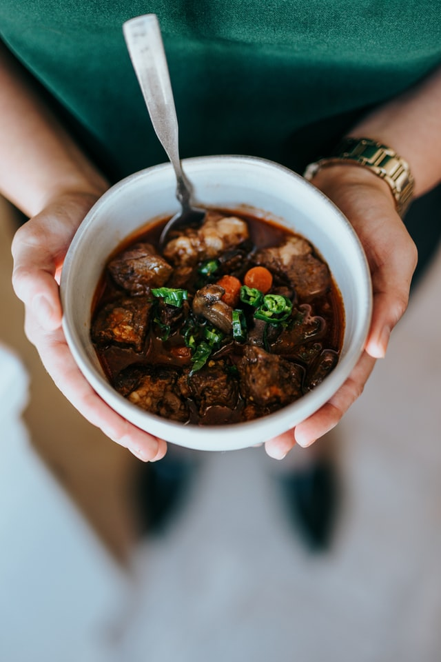

Irish Stew

This is a super simple and delicious Irish stew recipe which is perfect on a Sunday...and it'll make your house smell delightful too!
Ingredients list.
1 tablespoon vegetable oil
1 pound beef sirloin steak, cut into 1-inch cubes
1 large onion, chopped
2 carrots, chopped
2 ribs celery, chopped
3 cups hot water
2 ½ tablespoons dry brown gravy mix
2 cubes beef bouillon
¼ cup Worcestershire sauce
1 teaspoon chili powder
¼ teaspoon dried oregano
8 potatoes, cubed
salt and ground black pepper to taste
Steps.
Step 1
Heat vegetable oil in a stockpot over medium heat. Cook beef until browned on all sides, 2 to 4 minutes per side. Stir in onion, carrots, and celery.
Step 2
Mix water, gravy mix, and bouillon together in a small bowl; pour into stockpot. Stir in Worcestershire sauce, chili powder, and oregano.
Step 3
Cover stockpot, reduce heat to low, and simmer for 1 hour. Stir in potatoes, cover, and simmer until potatoes are easily pierced with a fork, about 30 minutes more. Season with salt and pepper.